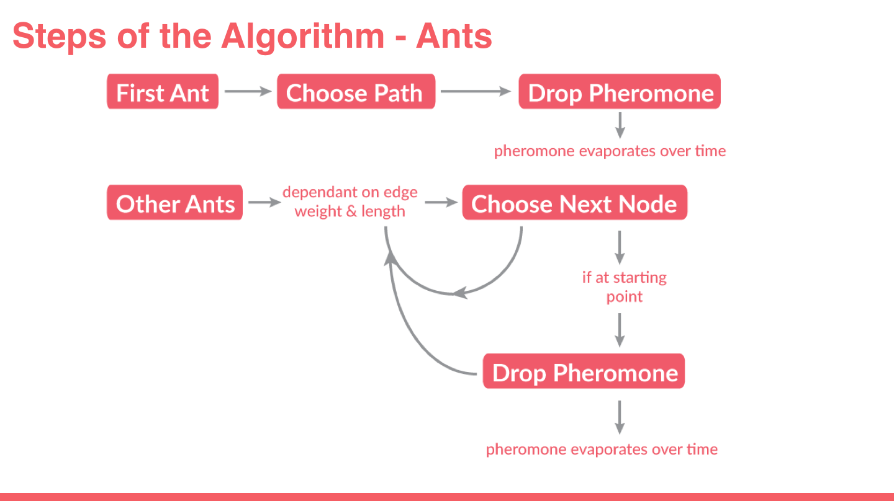

I'm a developer and designer based in Boston, MA.
During the fall of 2015, I worked with another student at Olin to develop two Python optimization algorithms based on the swarm intelligence of bees and ants. We used object-oriented Python to develop and test these stochastic algorithms for an area and graph search. The general concept of both algorithms is layed out in the diagrams to the left and below. Check out the github.
